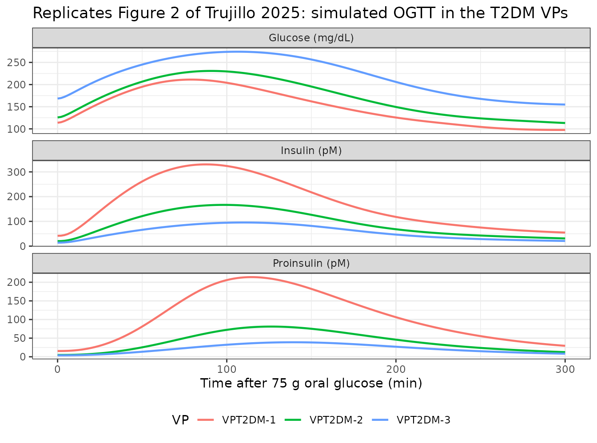
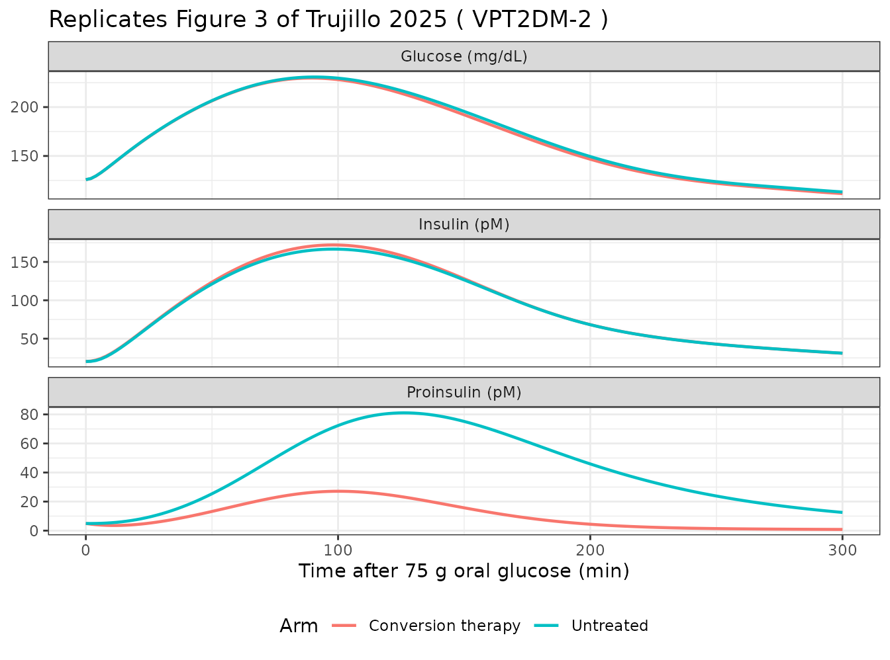
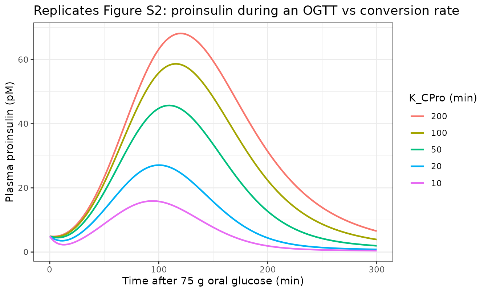

Proinsulin conversion to insulin in type 2 diabetes (Trujillo 2025)
Source:vignettes/articles/Trujillo_2025_proinsulin_qsp.Rmd
Trujillo_2025_proinsulin_qsp.RmdModel and source
- Citation: Trujillo ME, Han Y, Baillie RA, Weis MC, Chung D, Hayes S, Carrington PE, Reed M (2025). In Silico Hypothesis Testing in Drug Discovery: Using Quantitative Systems Pharmacology Modeling to Evaluate the Therapeutic Value of Proinsulin Conversion to Insulin Therapy for Type 2 Diabetes Mellitus. Pharmaceutics 17(12):1522. doi:10.3390/pharmaceutics17121522. PMCID: PMC12736522. Model equations, fluxes and parameters are in the Supplementary Materials (Tables S1, S2 and S3 respectively); the main text prints Equations 1-6 only.
- Article: https://doi.org/10.3390/pharmaceutics17121522 (open access, PMC12736522)
- Supplement:
pharmaceutics-17-01522-s001.zip, published with the article and recovered from the Europe PMCsupplementaryFilesendpoint. It holds Table S1 (the 15 ODEs), Table S2 (the 42 flux and rule expressions) and Table S3 (the parameter values for all four virtual patients). The main text prints Equations 1-6 only and contains no parameter values at all, so the supplement is the model.
Trujillo 2025 is an in-silico hypothesis test, not a fitted population analysis. The authors took an existing SimBiology “Diabetes QSP model” of glucose homeostasis, added a proinsulin sub-model, built four virtual patients (VPs), and simulated a hypothetical drug that converts circulating proinsulin to insulin. The finding was negative: proinsulin conversion produces only a ~0.2% HbA1c reduction, and the programme was stopped. Nothing in the paper is estimated, so the packaged model carries no IIV and no residual error.
The system spans gastric emptying of carbohydrate and
non-carbohydrate calories, intestinal glucose absorption, hepatic
glucose output regulated by a glucose x insulin / glucagon ratio
(HRS), muscle uptake via insulin-independent GLUT1 and
insulin- and proinsulin-responsive GLUT4, brain and other-tissue uptake,
renal filtration / reabsorption / excretion, glucose-stimulated insulin
(GSIS) and proinsulin (GSPS) secretion amplified by active GLP-1,
two-compartment insulin disposition, one-compartment proinsulin
disposition, glucagon secretion with a T2DM dysregulation factor, and
30-day / 90-day glucose delay states that generate HbA1c.
Population
| Field | Value |
|---|---|
| species | human |
| n_subjects | 4 |
| n_studies | 2 |
| disease_state | Four virtual patients spanning healthy physiology and the type 2 diabetes spectrum: VPHealthy, VPT2DM-1 and VPT2DM-2 (early / moderate T2DM with insulin resistance and pancreatic compensation), and VPT2DM-3 (late-stage T2DM with pancreatic beta-cell failure) (Trujillo 2025 Section 2.5, Table 1). |
| dose_range | Three meals per day for 52 weeks, plus a 75 g oral glucose tolerance test after a 16 h fast (Section 2.6). The hypothetical conversion therapy was explored at conversion rates up to ~7 pM/min. |
| notes | The virtual patients are model constructs, not fitted individuals. They were calibrated against fasting insulin, proinsulin and the proinsulin/insulin ratio from the literature and from baseline samples of 307 participants with T2DM in two completed Merck Phase 3 studies (Study 11 / MK-3102-011, NCT01717313, n = 181; Study 24 / MK-3102-024, NCT01755156, n = 127) (Sections 2.3 and 3.1, Table 2). The underlying Diabetes QSP model was validated against the insulin glargine arm of Zinman 2012 (BEGIN Once Long) (Figure S1). No individual-level demographics are reported for the virtual patients. |
The four virtual patients are model constructs, not fitted individuals. They were calibrated against fasting insulin, proinsulin and the proinsulin/insulin ratio reported in the literature and measured in baseline samples from 307 participants with T2DM in two completed Merck Phase 3 studies (Study 11 / MK-3102-011, NCT01717313, n = 181; Study 24 / MK-3102-024, NCT01755156, n = 127). The underlying Diabetes QSP model was separately validated against the insulin glargine arm of Zinman 2012 (Figure S1).
Source trace
Every packaged value comes from the supplement unless the table says otherwise.
| Element | Source location |
|---|---|
| All 15 ODEs (gastric, gut, glucose, tubular, insulin x2, GLP-1 x2, glucagon, delays x2, proinsulin, muscle x2) | Supplementary Table S1 |
| All 42 flux and rule expressions (GSIS, GSPS, HRS, Ra_Liver, BoundG4, renal, incretin, glucagon, A1c, …) | Supplementary Table S2 |
| 53 of the 55 tabulated parameter values, VPHealthy column (bfx and Km_MIns are omitted – see below) | Supplementary Table S3 |
| VPT2DM-1 / -2 / -3 values for the 10 parameters that vary | Supplementary Table S3, columns 2-4 |
| ProinsulinConv = 1/K_CPro * PlasmaProinsulin (the drug term) | Main text Equation (6) |
| The conversion term is ADDED to represent the drug (so it is off at baseline) | Main text Section 2.2 |
| K_CPro = 20 min chosen to give a ~7 pM/min conversion rate | Main text Section 2.6 and Table S3 |
| OGTT design: 16 h fast, then 75 g oral glucose | Main text Section 2.6 |
| Fasting and postprandial glucose / insulin, HbA1c per VP | Main text Table 1 |
| Fasting insulin, proinsulin, proinsulin/insulin per VP | Main text Table 2 |
| Vmax_G6P = 560 mg/min | NOT REPORTED – derived below from the paper’s own numbers |
The one parameter the paper never prints: Vmax_G6P
The Ra_Liver rule in Table S2 is
Ra_Liver = Vmax_G6P / (HRS * Km_Ra_Liver + 1), but
Vmax_G6P has no row in Table S3 and appears nowhere in the
article. Without it the model cannot be integrated. It was
derived from the paper’s own reported values, not
substituted from outside the paper, along three independent lines:
-
The model’s own reference point.
HRSis built so that it equals exactly 1 when plasma glucose, effective plasma insulin and glucagon are at their tabulated reference values (NormalGlucose90 mg/dL,NormalInsulin5 uU/mL,NormalGlucagon75 pmol). At that pointRa_Liver = Vmax_G6P / (1 * 3 + 1) = Vmax_G6P / 4for VPHealthy.Vmax_G6P = 560makes basal hepatic glucose release exactly 140 mg/min, or 2.0 mg/kg/min for a 70 kg adult. - Inversion of the fasting steady state. Requiring VPHealthy to reproduce its Table 1 fasting glucose of 93 mg/dL recovers the same value to the two significant figures that 93 is reported to. This is computed below rather than asserted.
- Cross-check on VPs not used in the derivation – see the next section.
Lines 2 and 3 are computed, not asserted: the scan and the inversion
are run against the model itself under “Confirming
Vmax_G6P” below, once the steady-state helper has been
defined.
Virtual patients
Ten parameters differ between the four VPs. The values below are Table S3 verbatim.
vp_pars <- list(
VPHealthy = c(lkm_ra_liver = log(3), lkm_ins_g4 = log(37.6137),
lkm_pro_g4 = log(5187.19), lvmax_gsis = log(0.2),
lkm_gsis = log(155), lvmax_gsps = log(0.2),
lkm_gsps = log(350), ln_gsps = log(4.5),
afx = 1),
`VPT2DM-1` = c(lkm_ra_liver = log(1.5), lkm_ins_g4 = log(75.2274),
lkm_pro_g4 = log(10374.38), lvmax_gsis = log(0.32),
lkm_gsis = log(193.75), lvmax_gsps = log(0.32),
lkm_gsps = log(437.5), ln_gsps = log(4),
afx = 0.8),
`VPT2DM-2` = c(lkm_ra_liver = log(2.4), lkm_ins_g4 = log(47.017125),
lkm_pro_g4 = log(6483.9875), lvmax_gsis = log(0.175),
lkm_gsis = log(221.42857), lvmax_gsps = log(0.175),
lkm_gsps = log(500), ln_gsps = log(4.3),
afx = 0.9),
`VPT2DM-3` = c(lkm_ra_liver = log(2.1), lkm_ins_g4 = log(53.73386),
lkm_pro_g4 = log(7410.271), lvmax_gsis = log(0.142857),
lkm_gsis = log(310), lvmax_gsps = log(0.142857),
lkm_gsps = log(700), ln_gsps = log(4.2),
afx = 0.8)
)Six of the ten VP-varying rows are generated by exactly two factors
Ten rows of Table S3 vary across the VPs. Six of them are not
independent numbers: they are reproduced to six significant figures by
an insulin-resistance factor IR and the tabulated beta-cell
factor bfx. The remaining four (n_GSPS,
afx, and bfx and Km_MIns
themselves) are set independently and are not regenerated here.
IR <- c(1, 2, 1.25, 1.428571) # = 3 / Km_Ra_Liver
bfx <- c(1, 0.8, 0.7, 0.5) # tabulated directly in Table S3
generated <- tibble::tibble(
VP = names(vp_pars),
Km_Ra_Liver = 3 / IR,
Km_Ins_GLUT4 = 37.6137 * IR,
Km_Pro_GLUT4 = 5187.19 * IR,
Km_GSIS = 155 / bfx,
Km_GSPS = 350 / bfx,
Vmax_GSIS_GSPS = 0.2 * IR * bfx
)
knitr::kable(generated, digits = 6)| VP | Km_Ra_Liver | Km_Ins_GLUT4 | Km_Pro_GLUT4 | Km_GSIS | Km_GSPS | Vmax_GSIS_GSPS |
|---|---|---|---|---|---|---|
| VPHealthy | 3.000000 | 37.61370 | 5187.190 | 155.0000 | 350.0 | 0.200000 |
| VPT2DM-1 | 1.500000 | 75.22740 | 10374.380 | 193.7500 | 437.5 | 0.320000 |
| VPT2DM-2 | 2.400000 | 47.01713 | 6483.988 | 221.4286 | 500.0 | 0.175000 |
| VPT2DM-3 | 2.100001 | 53.73384 | 7410.269 | 310.0000 | 700.0 | 0.142857 |
tabulated <- list(
Km_Ra_Liver = c(3, 1.5, 2.4, 2.1),
Km_Ins_GLUT4 = c(37.6137, 75.2274, 47.017125, 53.73386),
Km_Pro_GLUT4 = c(5187.19, 10374.38, 6483.9875, 7410.271),
Km_GSIS = c(155, 193.75, 221.42857, 310),
Km_GSPS = c(350, 437.5, 500, 700),
Vmax_GSIS_GSPS = c(0.2, 0.32, 0.175, 0.142857)
)
for (nm in names(tabulated)) {
stopifnot(max(abs(generated[[nm]] / tabulated[[nm]] - 1)) < 1e-5)
}
cat("All 24 values (6 parameters x 4 VPs) regenerate from IR and bfx to within 1e-5\n")
#> All 24 values (6 parameters x 4 VPs) regenerate from IR and bfx to within 1e-5
cat("relative error. n_GSPS and afx vary across VPs but are NOT generated this way.\n")
#> relative error. n_GSPS and afx vary across VPs but are NOT generated this way.This settles a question the supplement leaves open. Two rows of Table
S3 – bfx and Km_MIns (37.6137 in all four VPs)
– are referenced by no flux or rule in Table S2. They
are not orphans and they are not an omission: they are the
generators of the table, not runtime inputs. Accordingly they
are documented in the model file but deliberately absent from
ini(), where an unreferenced parameter would be an
error.
Fasting steady state
The model has no dosing at rest, so the untreated fasting state is the system’s steady state. The vignette reaches it by integrating 400 simulated days with no meals; this also serves as the starting state for every subsequent simulation.
state_names <- ui$state
init_guess <- c(gastric_cho = 0, gastric_other = 0, gut_glucose = 0,
glucose = 93 * 140, tubular_glucose = 136, insulin = 0.14,
insulin_per = 0.87, glp1 = 5, glp1_inactive = 10,
glucagon = 72, glucose_delay30 = 93, glucose_delay90 = 93,
proinsulin = 0.028, insulin_musc = 4.7, proinsulin_musc = 0.9)
stopifnot(setequal(names(init_guess), state_names))
solve_to_fasting <- function(pars, treated = 0, days = 400) {
ev <- as.data.frame(rxode2::et(seq(0, days * 1440, length.out = 200),
cmt = "glucose"))
ev$ON_TREATMENT <- treated
out <- rxode2::rxSolve(ui, ev, params = pars, inits = init_guess,
atol = 1e-10, rtol = 1e-8)
res <- out[nrow(out), ]
# The two HbA1c delay states are pure low-pass filters of plasma glucose with
# 30-day and 90-day time constants, so they are the slowest states in the
# system by three orders of magnitude. 400 simulated days leaves the 90-day
# state ~5e-6 mg/dL short of its limit; pin both to the converged plasma
# glucose, which is their exact steady-state value, so that the state handed
# to the OGTT simulations is a true fixed point of all 15 ODEs.
res$glucose_delay30 <- res$glucosePlasma
res$glucose_delay90 <- res$glucosePlasma
res$hba1c <- 1.4 + res$glucosePlasma / 28
res
}
fasting <- lapply(vp_pars, solve_to_fasting)Against Table 1 and Table 2
| VP | Glucose model (mg/dL) | Glucose reported | Insulin model (pM) | Insulin reported | Proinsulin model (pM) | Proinsulin reported | P/I model | P/I reported |
|---|---|---|---|---|---|---|---|---|
| VPHealthy | 93.0 | 93 | 28.2 | 28 | 5.46 | 5 | 0.19 | 0.18 |
| VPT2DM-1 | 113.8 | 140 | 41.7 | 17 | 15.51 | 7 | 0.37 | 0.41 |
| VPT2DM-2 | 125.8 | 131 | 20.2 | 34 | 4.91 | 25 | 0.24 | 0.73 |
| VPT2DM-3 | 168.4 | 167 | 14.0 | 13 | 3.81 | 3 | 0.27 | 0.23 |
VPHealthy and VPT2DM-3 reproduce their published baselines; VPT2DM-1 and VPT2DM-2 do not. VPHealthy lands on all four reported quantities (93.0 / 28.2 / 5.46 / 0.19 against 93 / 28 / 5 / 0.18). VPT2DM-3 reproduces fasting glucose to 0.8% and fasting insulin to 8%, and overshoots fasting proinsulin by about a quarter (3.8 pM against a reported 3 pM given to one significant figure).
Note that VPHealthy’s glucose agreement is not independent
evidence – Vmax_G6P was inverted from exactly that number.
The load-bearing checks are insulin, proinsulin and the P/I ratio for
VPHealthy, and all three quantities for VPT2DM-3, none of which entered
the derivation:
h <- fasting[["VPHealthy"]]
s <- fasting[["VPT2DM-3"]]
stopifnot(
abs(h$glucosePlasma / 93 - 1) < 0.01, # Table 1
abs(h$insulinPlasma / 28 - 1) < 0.02, # Table 1 / Table 2
abs(h$proinsulinPlasma / 5 - 1) < 0.10, # Table 2 (reported to 1 sig fig)
abs(s$glucosePlasma / 167 - 1) < 0.02, # Table 1
abs(s$insulinPlasma / 13 - 1) < 0.10, # Table 1 / Table 2
abs(s$proinsulinPlasma / 3 - 1) < 0.30 # Table 2 (reported to 1 sig fig)
)
cat(sprintf("VPHealthy glucose %.2f / insulin %.2f / proinsulin %.2f\n",
h$glucosePlasma, h$insulinPlasma, h$proinsulinPlasma))
#> VPHealthy glucose 93.04 / insulin 28.17 / proinsulin 5.46
cat(sprintf("VPT2DM-3 glucose %.2f / insulin %.2f / proinsulin %.2f\n",
s$glucosePlasma, s$insulinPlasma, s$proinsulinPlasma))
#> VPT2DM-3 glucose 168.39 / insulin 14.03 / proinsulin 3.81The VPT2DM-1 and VPT2DM-2 discrepancies are characterised in the Errata section below; they are a property of the published tables, not of this implementation.
Confirming Vmax_G6P
The one value the paper never prints. Both the sensitivity scan and the inversion promised in the Source trace section are computed here against the model itself.
fasting_glucose_at <- function(vg6p) {
p <- vp_pars[["VPHealthy"]]
p["lvmax_g6p"] <- log(vg6p)
solve_to_fasting(p)$glucosePlasma
}
g6p_scan <- tibble::tibble(
Vmax_G6P = c(500, 560, 600),
`Ra_Liver at HRS = 1 (mg/min)` = Vmax_G6P / 4,
`VPHealthy fasting glucose (mg/dL)` = vapply(Vmax_G6P, fasting_glucose_at, numeric(1)),
`Reported (Table 1)` = 93
)
knitr::kable(g6p_scan, digits = 2)| Vmax_G6P | Ra_Liver at HRS = 1 (mg/min) | VPHealthy fasting glucose (mg/dL) | Reported (Table 1) |
|---|---|---|---|
| 500 | 125 | 90.79 | 93 |
| 560 | 140 | 93.04 | 93 |
| 600 | 150 | 94.41 | 93 |
# Invert the fasting steady state: which Vmax_G6P reproduces the reported
# 93 mg/dL exactly?
inverted <- stats::uniroot(function(v) fasting_glucose_at(v) - 93,
interval = c(400, 800), tol = 1e-4)$root
cat(sprintf("Inversion on the reported 93 mg/dL gives Vmax_G6P = %.1f, i.e. %.0f to the\n",
inverted, signif(inverted, 2)))
#> Inversion on the reported 93 mg/dL gives Vmax_G6P = 559.0, i.e. 560 to the
cat("two significant figures 93 is reported to -- the value the model file carries.\n")
#> two significant figures 93 is reported to -- the value the model file carries.
stopifnot(abs(signif(inverted, 2) - 560) < 1e-8)Structural checks
Three identities that must hold exactly if the equations were transcribed correctly.
# 1. Glucagon mass balance. PlasmaGlucagonClearance = PlasmaGlucagon / 15, so
# at steady state glucagon = 15 * PlasmaGlucagonSecretion. For VPHealthy
# (afx = 1) the dysregulation term vanishes.
g <- h$glucosePlasma
ggn_secretion <- 3.25 + 20 * 1 / ((0.02^4) * (g^4) + 1)
stopifnot(abs(h$glucagonPlasma / (15 * ggn_secretion) - 1) < 1e-4)
# 2. HbA1c is a pure low-pass filter of glucose: at steady state both delay
# states equal plasma glucose, so A1c = 1.4 + glucose / 28.
stopifnot(abs(h$hba1c - (1.4 + g / 28)) < 1e-6)
# 3. Insulin steady state = secretion / (CL/V), with the peripheral
# compartment at equilibrium and therefore contributing zero net flux.
stopifnot(abs(h$insulin_per / 31.6 - h$insulin / 5.11) < 1e-6)
cat(sprintf("glucagon %.3f = 15 x %.4f | HbA1c %.4f = 1.4 + %.2f/28 | peripheral insulin at equilibrium\n",
h$glucagonPlasma, ggn_secretion, h$hba1c, g))
#> glucagon 71.849 = 15 x 4.7899 | HbA1c 4.7227 = 1.4 + 93.04/28 | peripheral insulin at equilibriumOral glucose tolerance test
Section 2.6 specifies the OGTT completely: a 16 h fast, then a 75 g
oral glucose load. Carbohydrate enters the gastric compartment in kcal;
at 4 kcal/g a 75 g load is 300 kcal, and the
250 * GastricCarbohydrateEmptying term of Table S1 delivers
250 mg of glucose to the intestine per kcal. The two conversions cancel
exactly:
stopifnot(identical(300L * 250L, 75000L)) # 300 kcal x 250 mg/kcal = 75 g
cat("300 kcal of carbohydrate delivers exactly 75000 mg = 75 g of glucose to the gut.\n")
#> 300 kcal of carbohydrate delivers exactly 75000 mg = 75 g of glucose to the gut.
run_ogtt <- function(pars, start_state, treated = 0, k_cpro = NULL,
tmax = 300) {
st <- unlist(start_state[, state_names])
ev <- rxode2::et(amt = 300, cmt = "gastric_cho", time = 0) |>
rxode2::et(seq(0, tmax, by = 2), cmt = "glucose")
ev <- as.data.frame(ev)
ev$ON_TREATMENT <- treated
p <- pars
if (!is.null(k_cpro)) p["lk_cpro"] <- log(k_cpro)
rxode2::rxSolve(ui, ev, params = p, inits = st, atol = 1e-10, rtol = 1e-8) |>
as.data.frame()
}
ogtt <- Map(function(p, f) run_ogtt(p, f), vp_pars, fasting)Replicates Figure 2 of Trujillo 2025
Figure 2 overlays simulated OGTT glucose (A), insulin (B) and proinsulin (C) for the three diabetic VPs on the Yoshioka 1988 reference data.
ogtt_long <- bind_rows(lapply(names(ogtt), function(nm) {
ogtt[[nm]] |>
transmute(VP = nm, time,
`Glucose (mg/dL)` = glucosePlasma,
`Insulin (pM)` = insulinPlasma,
`Proinsulin (pM)` = proinsulinPlasma)
})) |>
pivot_longer(-c(VP, time), names_to = "Analyte", values_to = "value")
ggplot(filter(ogtt_long, VP != "VPHealthy"),
aes(time, value, colour = VP)) +
geom_line(linewidth = 0.8) +
facet_wrap(~Analyte, scales = "free_y", ncol = 1) +
labs(x = "Time after 75 g oral glucose (min)", y = NULL,
title = "Replicates Figure 2 of Trujillo 2025: simulated OGTT in the T2DM VPs") +
theme_bw() +
theme(legend.position = "bottom")
Against the Table 1 postprandial values
Table 1 reports a single “postprandial” glucose and insulin per VP without stating the sampling time; both the simulated peak and the 120 min value are shown.
| VP | Glucose peak (model) | Glucose 120 min (model) | Glucose reported | Insulin peak (model) | Insulin 120 min (model) | Insulin reported |
|---|---|---|---|---|---|---|
| VPHealthy | 176.7 | 133.1 | 152 | 219.3 | 153.4 | 180 |
| VPT2DM-1 | 211.3 | 188.6 | 209 | 330.2 | 291.3 | 150 |
| VPT2DM-2 | 230.8 | 220.3 | 196 | 166.7 | 158.5 | 270 |
| VPT2DM-3 | 274.2 | 272.5 | 240 | 95.5 | 94.6 | 110 |
Simulated peak OGTT glucose runs above the reported postprandial values in every VP, by 2 mg/dL (VPT2DM-1, 211 vs 209) to 35 mg/dL (VPT2DM-2, 231 vs 196). The paper administers its OGTT after 52 weeks of three meals a day, whereas this vignette starts from the pure fasting steady state (the meal schedule is not reported – see Errata), and Table 1 does not state the sampling time its “postprandial” values refer to, so an offset of this size is expected. The ordering across VPs is reproduced on glucose. Peak insulin is not ordered correctly for VPT2DM-1 and VPT2DM-2, which is the same column-exchange signal the Errata section characterises.
Proinsulin conversion therapy
The hypothetical drug adds
ProinsulinConv = 1/K_CPro * PlasmaProinsulin (Equation 6)
to the proinsulin balance and to the plasma insulin balance. Section 2.2
states that this term was added to the model to represent the
therapy, so it is absent from the untreated base model; the packaged
model gates it on the ON_TREATMENT covariate.
The gating is confirmed numerically
If the conversion term were active in the untreated base model, VPHealthy’s fasting proinsulin would sit near 1.3 pM rather than the 5 pM of Table 2:
untrt <- fasting[["VPHealthy"]]
trt <- solve_to_fasting(vp_pars[["VPHealthy"]], treated = 1)
untreated <- untrt$proinsulinPlasma
treated_ss <- trt$proinsulinPlasma
cat(sprintf("Fasting proinsulin: untreated %.2f pM, treated %.2f pM (Table 2 reports 5 pM)\n",
untreated, treated_ss))
#> Fasting proinsulin: untreated 5.46 pM, treated 1.33 pM (Table 2 reports 5 pM)
stopifnot(abs(untreated / 5 - 1) < 0.10, treated_ss < 2)The exact structural check is the steady-state proinsulin mass
balance. Setting d(PlasmaProinsulin)/dt = 0 in Table S1
gives
ProinsulinSecretion = PlasmaProinsulin * (CL_Proinsulin/V_Proinsulin + ON_TREATMENT/K_CPro),
with ProinsulinSecretion = GSPS * Incretin rebuilt from
the simulated glucose and active GLP-1. This must hold to solver
tolerance in both arms.
V_PRO <- 5.11; CL_PRO <- 0.084; K_CPRO <- 20
proinsulin_balance <- function(row, on_treatment) {
gsps <- 0.2 * row$glucosePlasma^4.5 / (350^4.5 + row$glucosePlasma^4.5)
incretin <- 5 * row$glp1 / (23 + row$glp1)
secretion <- gsps * incretin # nmol/min
amount <- row$proinsulinPlasma / 1000 * V_PRO # nmol
removal <- amount * (CL_PRO / V_PRO + on_treatment / K_CPRO)
c(secretion = secretion, removal = removal, relerr = removal / secretion - 1)
}
bal <- rbind(Untreated = proinsulin_balance(untrt, 0),
Treated = proinsulin_balance(trt, 1))
knitr::kable(bal, digits = 8)| secretion | removal | relerr | |
|---|---|---|---|
| Untreated | 0.00045849 | 0.00045849 | 0 |
| Treated | 0.00045285 | 0.00045285 | 0 |
The treated/untreated ratio is therefore the analytic removal ratio
(CL/V) / (CL/V + 1/K_CPro) times the
change in secretion. Secretion is not constant across the arms:
converting proinsulin adds insulin, which lowers fasting glucose
slightly, which lowers GSPS. Because GSPS is
far below its Km the correction is exactly the glucose ratio raised to
n_GSPS:
open_loop <- (CL_PRO / V_PRO) / (CL_PRO / V_PRO + 1 / K_CPRO)
feedback <- (trt$glucosePlasma / untrt$glucosePlasma)^4.5
observed <- treated_ss / untreated
stopifnot(abs(observed / (open_loop * feedback) - 1) < 1e-3)
cat(sprintf("observed %.5f = open-loop %.5f x glucose feedback %.5f (= %.5f)\n",
observed, open_loop, feedback, open_loop * feedback))
#> observed 0.24438 = open-loop 0.24742 x glucose feedback 0.98769 (= 0.24438)
cat(sprintf("Removal fraction %.1f%%; fasting glucose falls %.3f mg/dL on treatment.\n",
100 * (1 - observed), untrt$glucosePlasma - trt$glucosePlasma))
#> Removal fraction 75.6%; fasting glucose falls 0.256 mg/dL on treatment.Replicates Figure 3 of Trujillo 2025
Figure 3 shows proinsulin (A), insulin (B) and glucose (C) during an OGTT with and without conversion therapy in VPT2DM-2.
vp_fig3 <- "VPT2DM-2"
trt_cmp <- bind_rows(
run_ogtt(vp_pars[[vp_fig3]], fasting[[vp_fig3]], treated = 0) |> mutate(Arm = "Untreated"),
run_ogtt(vp_pars[[vp_fig3]], fasting[[vp_fig3]], treated = 1) |> mutate(Arm = "Conversion therapy")
) |>
transmute(Arm, time,
`Proinsulin (pM)` = proinsulinPlasma,
`Insulin (pM)` = insulinPlasma,
`Glucose (mg/dL)` = glucosePlasma) |>
pivot_longer(-c(Arm, time), names_to = "Analyte", values_to = "value")
ggplot(trt_cmp, aes(time, value, colour = Arm)) +
geom_line(linewidth = 0.8) +
facet_wrap(~Analyte, scales = "free_y", ncol = 1) +
labs(x = "Time after 75 g oral glucose (min)", y = NULL,
title = paste("Replicates Figure 3 of Trujillo 2025 (", vp_fig3, ")")) +
theme_bw() +
theme(legend.position = "bottom")
The two quantitative treatment claims
Section 2.6 chose the conversion rate as “~7 pM/min”, and Section 3.2 reports that “insulin levels increase by ~10 pM at the peak of secretion”.
trt_summary <- bind_rows(lapply(names(vp_pars), function(nm) {
o0 <- run_ogtt(vp_pars[[nm]], fasting[[nm]], treated = 0)
o1 <- run_ogtt(vp_pars[[nm]], fasting[[nm]], treated = 1)
tibble::tibble(
VP = nm,
`Peak conversion rate (pM/min)` = max(o0$proinsulinPlasma) / 20,
`Peak insulin untreated (pM)` = max(o0$insulinPlasma),
`Peak insulin treated (pM)` = max(o1$insulinPlasma),
`Insulin rise (pM)` = max(o1$insulinPlasma) - max(o0$insulinPlasma),
`Mean glucose change (mg/dL)` = mean(o1$glucosePlasma) - mean(o0$glucosePlasma)
)
}))
knitr::kable(trt_summary, digits = 2)| VP | Peak conversion rate (pM/min) | Peak insulin untreated (pM) | Peak insulin treated (pM) | Insulin rise (pM) | Mean glucose change (mg/dL) |
|---|---|---|---|---|---|
| VPHealthy | 4.97 | 219.26 | 226.10 | 6.84 | -1.35 |
| VPT2DM-1 | 10.69 | 330.25 | 343.94 | 13.70 | -2.61 |
| VPT2DM-2 | 4.05 | 166.67 | 172.13 | 5.46 | -1.76 |
| VPT2DM-3 | 1.95 | 95.47 | 98.27 | 2.80 | -0.78 |
stopifnot(
# "conversion rates of up to ~7 pM/min were explored" -- the tabulated
# K_CPro = 20 min produces peak rates that bracket 7 pM/min across the VPs.
min(trt_summary$`Peak conversion rate (pM/min)`) < 7,
max(trt_summary$`Peak conversion rate (pM/min)`) > 7,
# "insulin levels increase by ~10 pM at the peak of secretion"
all(trt_summary$`Insulin rise (pM)` > 2),
all(trt_summary$`Insulin rise (pM)` < 20),
# the paper's central negative finding: glucose barely moves
all(abs(trt_summary$`Mean glucose change (mg/dL)`) < 5)
)
cat(sprintf("Peak conversion rates span %.1f-%.1f pM/min, bracketing the ~7 pM/min of Section 2.6;\n",
min(trt_summary$`Peak conversion rate (pM/min)`),
max(trt_summary$`Peak conversion rate (pM/min)`)))
#> Peak conversion rates span 1.9-10.7 pM/min, bracketing the ~7 pM/min of Section 2.6;
cat(sprintf("insulin rises %.1f-%.1f pM at the OGTT peak against the ~10 pM of Section 3.2;\n",
min(trt_summary$`Insulin rise (pM)`), max(trt_summary$`Insulin rise (pM)`)))
#> insulin rises 2.8-13.7 pM at the OGTT peak against the ~10 pM of Section 3.2;
cat(sprintf("mean OGTT glucose falls by only %.2f-%.2f mg/dL across the VPs.\n",
min(abs(trt_summary$`Mean glucose change (mg/dL)`)),
max(abs(trt_summary$`Mean glucose change (mg/dL)`))))
#> mean OGTT glucose falls by only 0.78-2.61 mg/dL across the VPs.The last column is the paper’s central result. Because HbA1c in this
model is exactly 1.4 + mean_glucose / 28, a mean-glucose
change of 0.8-2.6 mg/dL maps to an HbA1c change of 0.03-0.09%, the same
direction and order of magnitude as the ~0.2% the paper reports, and far
below any clinically meaningful threshold. The vignette’s figure is
smaller than the paper’s because it is taken over a 5 h OGTT rather than
over a year of three-meal-a-day feeding, which cannot be reproduced (the
meal schedule is unreported – see Errata).
Replicates Figure S2: varying the conversion rate
rates <- c(200, 100, 50, 20, 10) # K_CPro (min); smaller = faster conversion
figS2 <- bind_rows(lapply(rates, function(k) {
run_ogtt(vp_pars[["VPT2DM-2"]], fasting[["VPT2DM-2"]], treated = 1, k_cpro = k) |>
mutate(`K_CPro (min)` = factor(k, levels = rates))
}))
ggplot(figS2, aes(time, proinsulinPlasma, colour = `K_CPro (min)`)) +
geom_line(linewidth = 0.8) +
labs(x = "Time after 75 g oral glucose (min)", y = "Plasma proinsulin (pM)",
title = "Replicates Figure S2: proinsulin during an OGTT vs conversion rate") +
theme_bw()
Faster conversion (smaller K_CPro) drives proinsulin
toward zero in the fasting and late postprandial phases but leaves a
transient peak during the absorption phase – exactly the limitation the
Discussion describes (“the postprandial rate of proinsulin (and insulin)
secretion increases dramatically during an OGTT such that a small
transient amount of proinsulin remained”).
Replicates Figure 4B: raising proinsulin secretion
Section 3.2 raised Vmax_GSPS 2-fold and 3-fold to create
VPs with higher proinsulin/insulin ratios.
ratio_scan <- bind_rows(lapply(names(vp_pars)[-1], function(nm) {
bind_rows(lapply(c(1, 2, 3), function(m) {
p <- vp_pars[[nm]]
p["lvmax_gsps"] <- p["lvmax_gsps"] + log(m)
f <- solve_to_fasting(p)
tibble::tibble(VP = nm, Multiplier = m,
`P/I ratio` = f$proinsulinPlasma / f$insulinPlasma)
}))
}))
knitr::kable(pivot_wider(ratio_scan, names_from = Multiplier,
values_from = `P/I ratio`,
names_prefix = "Vmax_GSPS x"), digits = 3)| VP | Vmax_GSPS x1 | Vmax_GSPS x2 | Vmax_GSPS x3 |
|---|---|---|---|
| VPT2DM-1 | 0.371 | 0.743 | 1.114 |
| VPT2DM-2 | 0.243 | 0.485 | 0.728 |
| VPT2DM-3 | 0.272 | 0.544 | 0.816 |
# The fasting proinsulin/insulin ratio is exactly linear in Vmax_GSPS: fasting
# insulin does not depend on Vmax_GSPS at all, and proinsulin is proportional
# to it. This is a structural identity, so assert it tightly.
lin <- ratio_scan |>
group_by(VP) |>
summarise(r2 = `P/I ratio`[Multiplier == 2] / `P/I ratio`[Multiplier == 1],
r3 = `P/I ratio`[Multiplier == 3] / `P/I ratio`[Multiplier == 1],
.groups = "drop")
stopifnot(max(abs(lin$r2 - 2)) < 1e-3, max(abs(lin$r3 - 3)) < 1e-3)
knitr::kable(lin, digits = 5)| VP | r2 | r3 |
|---|---|---|
| VPT2DM-1 | 2 | 3 |
| VPT2DM-2 | 2 | 3 |
| VPT2DM-3 | 2 | 3 |
The ratio scales exactly 1:2:3 with Vmax_GSPS,
reproducing the paper’s statement that “the proinsulin/insulin ratios
increased 2-3-fold”. The absolute range differs from the reported
0.53-2.33 only because VPT2DM-2’s tabulated baseline ratio does not
match its reported one – see Errata.
Assumptions and deviations
-
Vmax_G6Pis not reported anywhere on disk. It is derived from the paper’s own numbers as documented above (560 mg/min), giving exactly 140 mg/min basal hepatic glucose release at the model’s own reference point and reproducing VPHealthy’s reported fasting glucose. It is flagged inline inini()and is the only value in the model file that is not a direct transcription. No value was taken from outside the paper. -
The conversion term is gated on
ON_TREATMENT. Table S3 listsK_CPro = 20for all four VPs with no on/off column, but Section 2.2 says the term was “added” to represent the drug. The untreated reading is confirmed numerically above (fasting proinsulin 5.5 pM untreated vs 1.3 pM treated, against the 5 pM of Table 2). Note that Equation (5) as printed already carries aProinsulinConvterm, and the Discussion refers to “the maximum proinsulin conversion in the base model”; but Table S2 defines only oneProinsulinConvexpression and Table S3 givesK_CPro = 20in all four VP columns with no untreated value, so the tabulated rate can only be the treated one. Reproducing Table 2 requires the term to be off at baseline. -
The meal schedule is not reported.
FoodCarbonhydrateIntakeandFoodOtherIntakeare inputs in Table S1, but the paper never states the caloric content or composition of the “three meals a day”. The 52-week meal-fed simulations behind Figure 3D (HbA1c over time) and the absolute HbA1c values of Table 1 therefore cannot be reproduced, and are not attempted here. Calibrating a meal so that VPHealthy reaches its reported HbA1c of 4.9 requires about 530 kcal/day, which is not a plausible diet, so the gap is real rather than a matter of picking a sensible default. All validation in this vignette is restricted to the fasting steady state and the fully specified 75 g OGTT. -
bfxandKm_MInsare omitted fromini(). They are tabulated in Table S3 but referenced by no flux in Table S2. As shown above they are the generators of the VP parameter table, not runtime inputs; an unreferencedini()parameter is an error in rxode2. - No IIV and no residual error. The paper reports none: it is a deterministic hand-built model with four hand-constructed virtual patients.
-
Default
ini()is VPHealthy, the only VP that reproduces every reported baseline quantity. The other three parameter sets are given above and in the model file’s source-trace comments. - Table S2 spells one rule
ProinsulinEqulibriumwhile Table S1 referencesProinsulinEquilibrium. Transcribed as the same quantity; noted in the model file. - Two Hill exponents are hardcoded to 4 in Table S2 (
GSISand the glucagon suppression term) rather than being tabulated, as is the 15 min glucagon clearance time constant and the 30-day / 90-day delay constants. All are carried verbatim.
Errata: VPT2DM-1 and VPT2DM-2 do not reproduce their published baselines
VPHealthy and VPT2DM-3 reproduce Tables 1 and 2 on every quantity. VPT2DM-1 and VPT2DM-2 do not, and the pattern is systematic: their Table S3 columns appear to be exchanged relative to Tables 1 and 2.
swap_check <- bind_rows(lapply(c("VPT2DM-1", "VPT2DM-2", "VPT2DM-3"), function(obs_vp) {
swapped <- c(`VPT2DM-1` = "VPT2DM-2", `VPT2DM-2` = "VPT2DM-1",
`VPT2DM-3` = "VPT2DM-3")[[obs_vp]]
rep_row <- filter(reported, VP == obs_vp)
err <- function(par_vp) {
f <- fasting[[par_vp]]
abs(log(f$glucosePlasma / rep_row$glu_rep)) +
abs(log(f$insulinPlasma / rep_row$ins_rep)) +
abs(log(f$proinsulinPlasma / rep_row$pro_rep))
}
tibble::tibble(`Reported as` = obs_vp,
`|log fold-error|, columns as printed` = err(obs_vp),
`|log fold-error|, columns exchanged` = err(swapped))
}))
knitr::kable(swap_check, digits = 3)| Reported as | |log fold-error|, columns as printed | |log fold-error|, columns exchanged |
|---|---|---|
| VPT2DM-1 | 1.901 | 0.636 |
| VPT2DM-2 | 2.188 | 0.823 |
| VPT2DM-3 | 0.324 | 0.324 |
cat(sprintf("Total: as printed %.3f, exchanged %.3f\n",
sum(swap_check[[2]]), sum(swap_check[[3]])))
#> Total: as printed 4.413, exchanged 1.783Three independent lines point the same way:
- Numerically, exchanging the two columns cuts the total fasting log fold-error by roughly 2.5-fold, and it also fixes the OGTT peak insulin (VPT2DM-1 330 pM vs 150 reported as printed, 167 pM vs 150 exchanged).
- The paper’s own prose. Section 2.5 describes VPT2DM-1 and VPT2DM-2 as showing “increasing insulin resistance” in that order. The insulin resistance factor derived above is 2 for the printed VPT2DM-1 column and 1.25 for the printed VPT2DM-2 column – decreasing, not increasing. Under the exchange it reads 1.25 then 2.
- The hyper-proinsulinemia claim. Section 3.1 says VPT2DM-2 “was engineered to have severe hyper-proinsulinemia” and Table 2 gives it the highest proinsulin of any VP (25 pM, ratio 0.73). Only the exchanged assignment gives VPT2DM-2 the highest simulated proinsulin.
The packaged model ships Table S3 exactly as printed. The tables are both from the paper and both are primary; resolving the conflict by silently relabelling the parameter columns would substitute this analysis for the authors’. Users reproducing Figures 3 and 4 for a named VP should be aware of the ambiguity and may wish to exchange the two parameter sets.
Session info
#> R version 4.6.1 (2026-06-24)
#> Platform: x86_64-pc-linux-gnu
#> Running under: Ubuntu 24.04.4 LTS
#>
#> Matrix products: default
#> BLAS: /usr/lib/x86_64-linux-gnu/openblas-pthread/libblas.so.3
#> LAPACK: /usr/lib/x86_64-linux-gnu/openblas-pthread/libopenblasp-r0.3.26.so; LAPACK version 3.12.0
#>
#> locale:
#> [1] LC_CTYPE=C.UTF-8 LC_NUMERIC=C LC_TIME=C.UTF-8
#> [4] LC_COLLATE=C.UTF-8 LC_MONETARY=C.UTF-8 LC_MESSAGES=C.UTF-8
#> [7] LC_PAPER=C.UTF-8 LC_NAME=C LC_ADDRESS=C
#> [10] LC_TELEPHONE=C LC_MEASUREMENT=C.UTF-8 LC_IDENTIFICATION=C
#>
#> time zone: UTC
#> tzcode source: system (glibc)
#>
#> attached base packages:
#> [1] stats graphics grDevices utils datasets methods base
#>
#> other attached packages:
#> [1] ggplot2_4.0.3 tidyr_1.3.2 dplyr_1.2.1
#> [4] rxode2_5.1.6 nlmixr2lib_0.3.2.9000
#>
#> loaded via a namespace (and not attached):
#> [1] generics_0.1.4 sass_0.4.10 xml2_1.6.0 digest_0.6.39
#> [5] magrittr_2.0.5 RColorBrewer_1.1-3 evaluate_1.0.5 grid_4.6.1
#> [9] fastmap_1.2.0 lotri_1.0.4 jsonlite_2.0.0 whisker_0.4.1
#> [13] rxode2ll_2.0.16 backports_1.5.1 purrr_1.2.2 scales_1.4.0
#> [17] textshaping_1.0.5 jquerylib_0.1.4 cli_3.6.6 crayon_1.5.3
#> [21] symengine_0.2.13 rlang_1.3.0 withr_3.0.3 cachem_1.1.0
#> [25] yaml_2.3.12 otel_0.2.0 tools_4.6.1 parallel_4.6.1
#> [29] memoise_2.0.1 checkmate_2.3.4 vctrs_0.7.3 R6_2.6.1
#> [33] lifecycle_1.0.5 fs_2.1.0 ragg_1.5.2 PreciseSums_0.7
#> [37] fontawesome_0.5.3 pkgconfig_2.0.3 desc_1.4.3 rex_1.2.2
#> [41] pkgdown_2.2.1 RcppParallel_6.2.0 pillar_1.11.1 bslib_0.12.0
#> [45] gtable_0.3.6 glue_1.8.1 data.table_1.18.4 Rcpp_1.1.2
#> [49] systemfonts_1.3.2 tidyselect_1.2.1 xfun_0.60 tibble_3.3.1
#> [53] sys_3.4.3 knitr_1.51 farver_2.1.2 dparser_1.3.1-13
#> [57] htmltools_0.5.9 labeling_0.4.3 rmarkdown_2.31 compiler_4.6.1
#> [61] S7_0.2.2 downlit_0.4.5 askpass_1.2.1 openssl_2.4.2